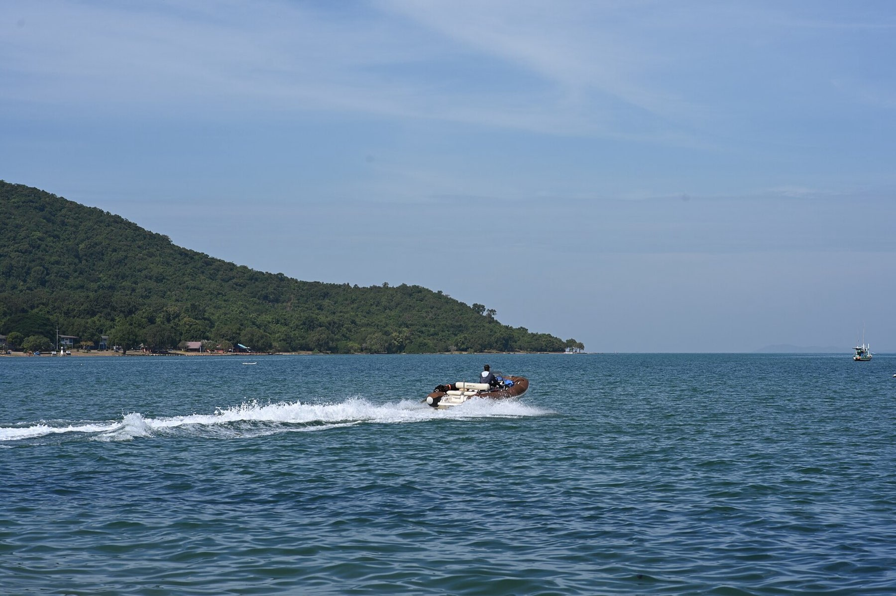
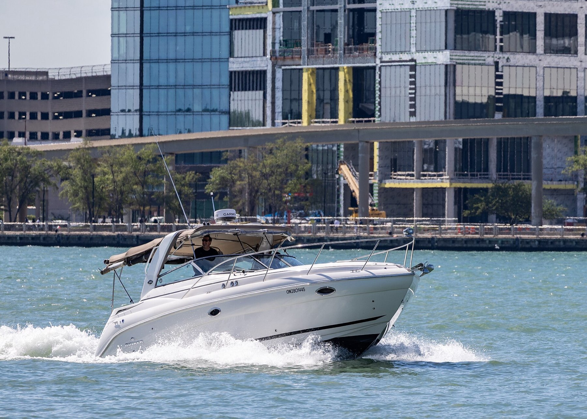
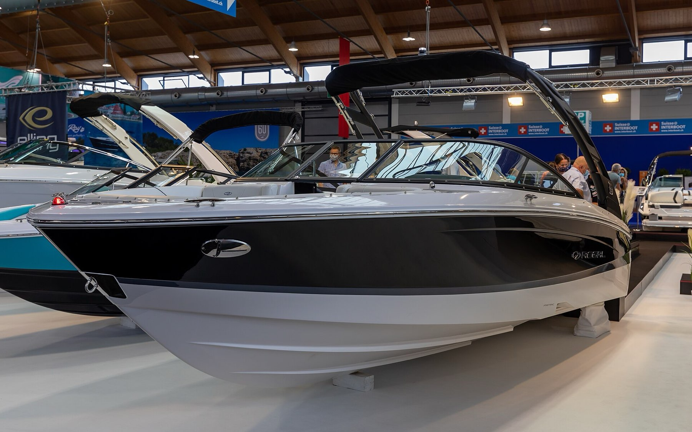
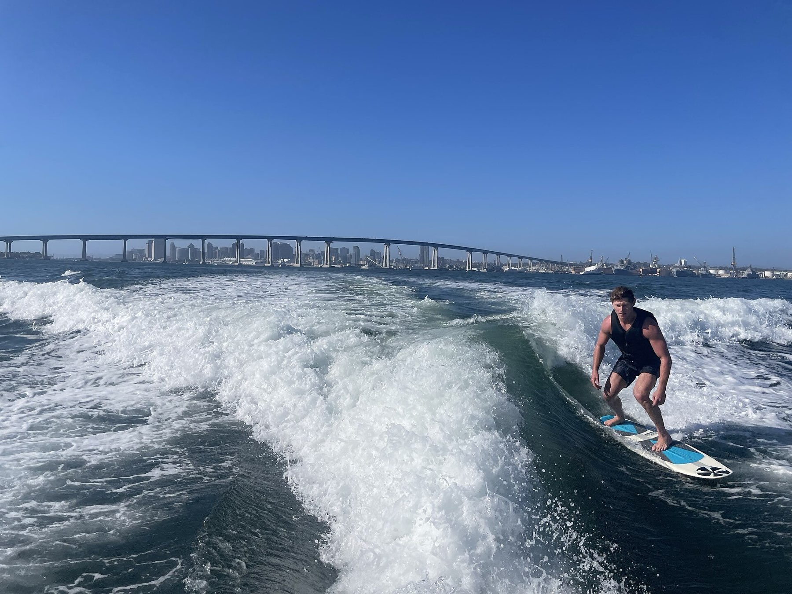
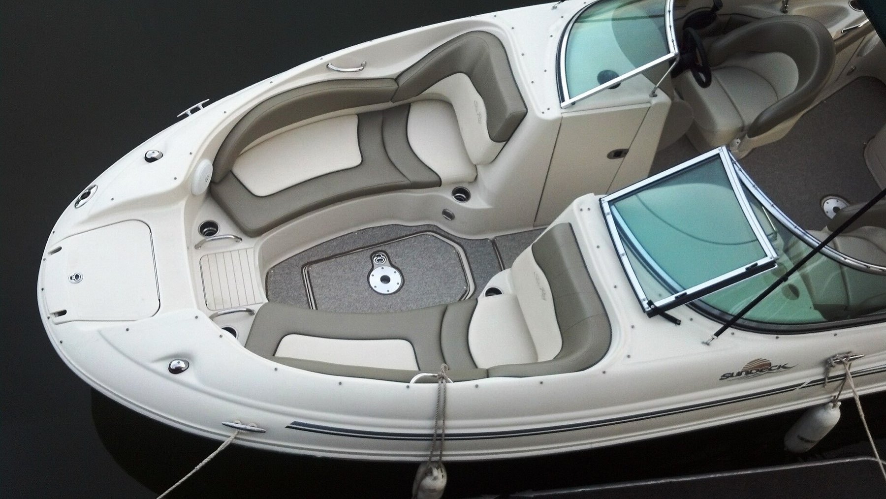

 | DSC 6363 Speedboat cuts a white wake across calm blue waters with a green tree-covered shoreline in the distance under a clear sky.jpg | PattayaPatrol | CC BY-SA 4.0 |
 | Lake Wallenpaupack Sunset.JPG | Derek Ramsey (Ram-Man) | CC BY-SA 4.0 |
 | Lake Wallenpaupack - panoramio.jpg | Ameer Attia | CC BY 3.0 |
 | Lake Wallenpaupack, Pennsylvania (4095488292).jpg | Doug Kerr | CC BY-SA 2.0 |
 | Harris Boat Works marina aerial view, Gores Landing, Ontario.jpg | Harris Boat Works (commissioned photo) | CC BY-SA 4.0 |
 | Luxury Pontoon Boats.jpg | Wake Riderz Boat Rental Lake Austin | CC BY-SA 4.0 |
 | America 250 Fourth of July boat parade, Bass Lake, California.jpg | Guywelch2000 | CC BY 4.0 |
 | Chaparral EM1B0150 (49902833467).jpg | Bengt Nyman | CC BY 2.0 |
 | Chaparral Signature 280 on the Detroit River, 2026-05-25.jpg | Chris Woodrich | CC BY-SA 4.0 |
 | Regal, Interboot 2020, Friedrichshafen (IB200257).jpg | Matti Blume | CC BY-SA 4.0 |
 | Wakesurfing San Diego Bay.jpg | Blervis | CC0 |
 | Wakesurfing, Slidell Louisiana, 24 May 2020 - 01.jpg | Colin Van Dervort | CC BY 2.0 |
 | Marina di Capitana-Travel lift.jpg | Gioele Serra | CC BY 4.0 |
 | 2005 Sea Ray 220 Sundeck open bow area.jpg | McChizzle | Public domain |
 | Dry stack boat storage - geograph.org.uk - 8271446.jpg | Eirian Evans | CC BY-SA 2.0 |
 | Trails on the Ionian Canvas.jpg | Nathannn20 | CC BY-SA 4.0 |